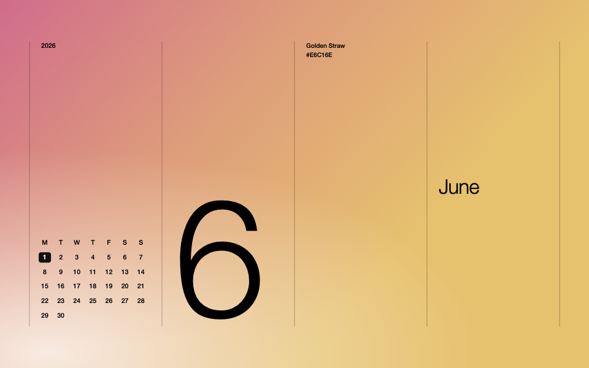
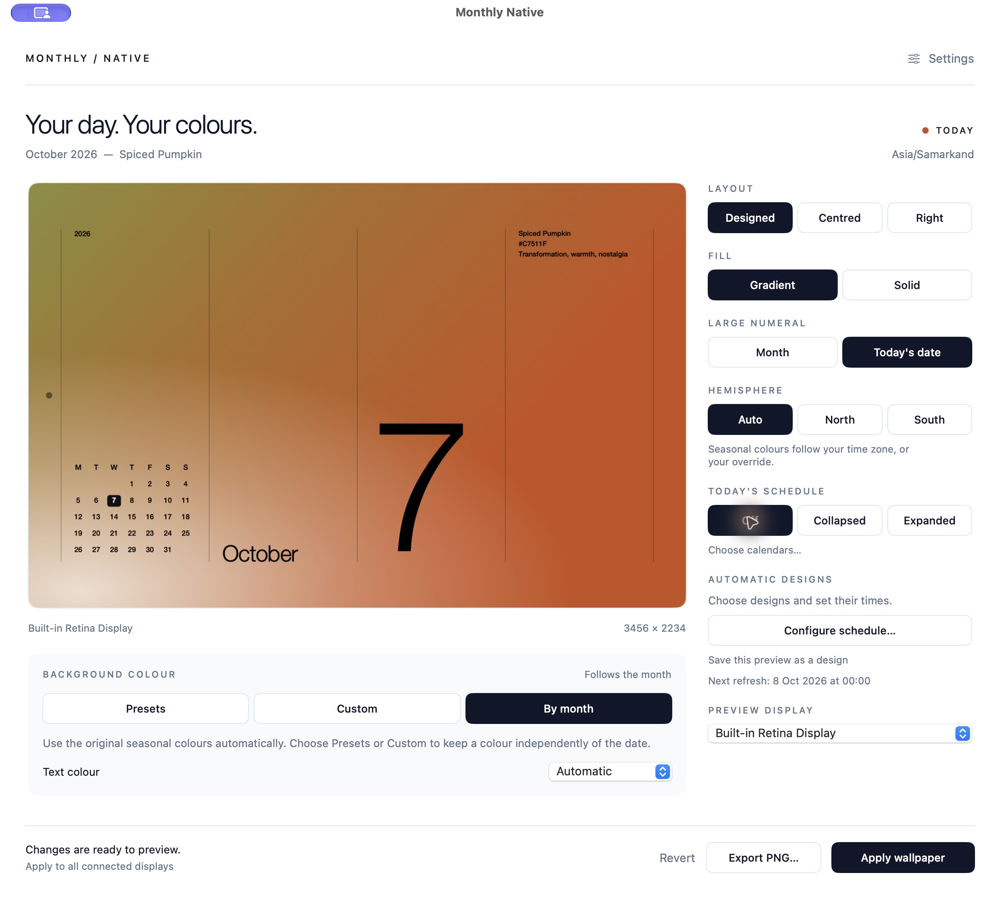

MADE FOR MAC · FREE & OPEN SOURCE
Your desktop,
in season.
A little colour. A clearer calendar.
A wallpaper that moves through the day with you.
v1.2.0 · macOS 14+ · Apple Silicon & Intel*
Current download is not notarized. macOS may block it.
Read before installing →

01 / FIND YOUR COLOUR
A different mood.
The same calm desktop.
Choose a seasonal palette, one of 24 gradient presets, or colours of your own. Dates keep moving even when your colours stay the same.

02 / MAKE IT YOURS
Set the rhythm.
Keep the choice.
Your designs, in your order.
Save your favourites. Set exact daily times, or switch every hour or day. Nothing is shuffled.
The day, at a glance.
A Monday-first calendar and today's highlight, with optional events from macOS Calendar. Three layouts make room for your desktop.
Quietly native.
Full-resolution wallpapers for your displays, a menu-bar home, and a desktop control dot you can turn off. No web engine or tracking.
03 / ON YOUR MAC
A new view
in a few steps.
Download the DMG macOS 14 Sonoma or later.
*Universal binary; Intel hardware execution is not yet verified.
- Open the download.
Download MonthlyNative.dmg and open the disk image.
- Drag into Applications.
Move Monthly Native to the Applications shortcut, then open it from Applications.
- Choose your design. Apply.
Set your colours and layout, then click Apply. Close the window to keep updates running in the menu bar.
A FEW USEFUL DETAILS
Before you settle in.
Does it update after I quit the app?
Closing the window keeps it running. Command-Q stops automatic updates and leaves the last wallpaper in place. Enable Launch at login to start it when you sign in. Updates missed during sleep catch up after wake.
Where does my Calendar data go?
It stays on your Mac. Calendar access is optional and read-only in the app. Expanded event titles appear in wallpaper images and local cached PNGs, so be mindful when sharing your screen. Read the privacy notes.
Can I use it for free or change the code?
Yes. Monthly Native is free and MIT licensed. You can use, modify and redistribute the code under the license terms. Explore the source.
What should I know about compatibility?
Apple Silicon has been tested. Intel hardware, external-display configurations, older macOS UI behavior and all Calendar/login permission paths need wider testing. macOS limits control of inactive Spaces and lock/login screens. See validation and limitations.